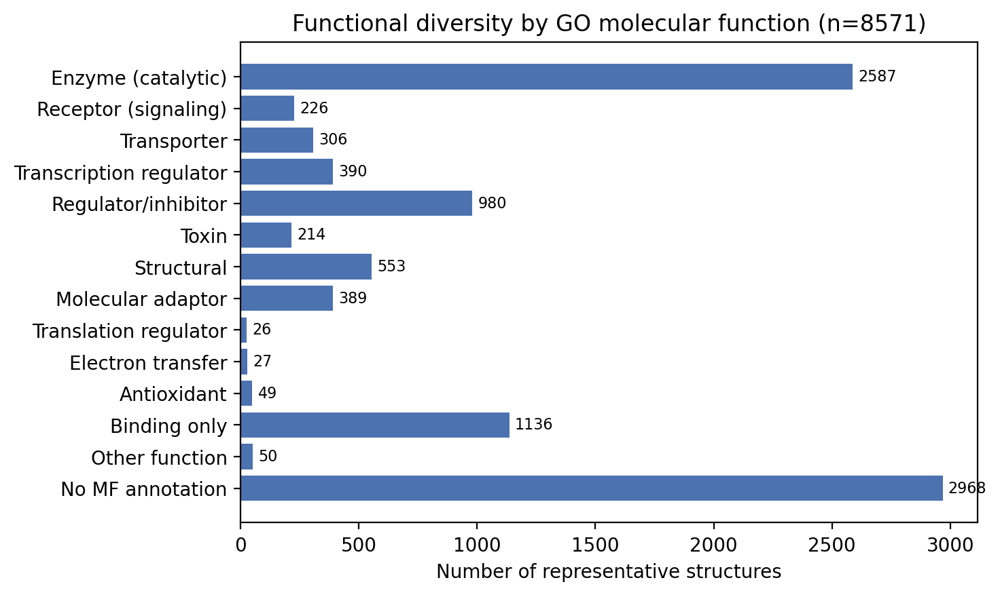
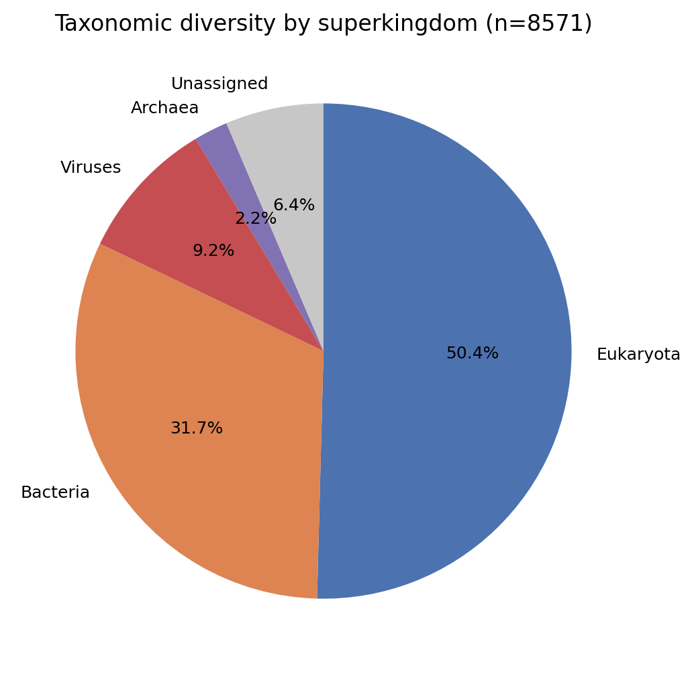

This page documents the full pipeline behind every value in SurfPotDB, and how to reuse the downloadable files. For the overview and the dataset's scope, see the About page.
What each structure ships
For each computed structure we report four electrostatic energy
contributions (in kT), the range of the molecular-surface
potential (in kT/e), and two downloadable files: the surface
potential mesh (.vtp, for ParaView/PyVista) and the protonated
structure with charges and radii (.pqr, for PyMOL/VMD).
How structures were selected
Solving the Poisson–Boltzmann equation on the entire PDB would repeat work on near-identical entries. We reduced the PDB to a non-redundant set of representatives through the following funnel:
| 1. Download | Entire RCSB PDB, keeping only structures with fewer than 1000 protein residues. |
| 2. Filter | Removed entries released before year 2010 and membrane proteins (via the RCSB API). |
| 3. Cluster | Grouped by sequence identity using RCSB's pre-computed clusters at 90% identity: 126,139 proteins → 32,861 clusters. |
| 4. Representative | One representative per cluster, chosen by best resolution (ties broken by larger residue count). |
| 5. This release | Of the cluster representatives, computed the ligand- and ion-free ones (protein-only): 8,571 structures, standing for 19,017 PDB entries. Where a representative also carried nucleic acid or other non-protein chains, only the protein was kept for the calculation. |
Calculations run on the representatives only, and a query for any member of a cluster is resolved to its representative (see Cluster resolution below), so a single computed structure answers for its whole cluster. This first release is deliberately restricted to protein-only inputs: every computed structure is free of bound ligands and ions, so the electrostatics rest on a single, well-defined assignment of charges and radii, with no ambiguous parametrization of cofactors. Representatives that carry ligands or ions are deferred to forthcoming releases, once a robust parametrization of their charges and radii is in place.
How the PDBs were protonated
Poisson–Boltzmann electrostatics depends critically on the protonation state of titratable residues, which crystal structures do not provide. We assigned protonation with MCCE4 (Multi-Conformation Continuum Electrostatics):
- MCCE builds multiple side-chain conformers and protonation micro-states for each titratable residue.
- It evaluates their electrostatic interactions with a continuum (Poisson–Boltzmann) model, internally using NextGenPB for the PBE energy term, and samples the state space by Monte Carlo to compute pKa values.
- At pH 7.0 we extracted the maximum-occupancy conformation (the most probable protonation/conformation state) and converted it to a PQR file carrying MCCE atomic charges and radii.
This protonated PQR is the input to the final electrostatics calculation
and is the .pqr file offered for download. Because it carries
the per-atom charges and radii assigned by MCCE, the downloaded
.pqr lets you recover the exact protonation state
(which titratable groups are protonated/deprotonated, and in which
conformer) that MCCE determined at pH 7.0, the ground-truth
protonation behind every number on this site.
Electrostatics calculation (NextGenPB)
Each protonated structure is solved with NextGenPB as a standalone
linearized Poisson–Boltzmann calculation, using a single, documented
parameter set: solute dielectric 2, solvent dielectric
80, ionic strength 0.145 M, temperature
298.15 K. The run produces the molecular-surface potential
map (.vtp) and the energy decomposition reported here
(polarization, ionic, Coulombic, total).
The four energy contributions are given in kT. To convert to
kcal/mol, multiply by 0.593
(1 kT at 298.15 K = 0.593 kcal/mol).
Potential anywhere inside the protein
The published .vtp meshes are enriched: for
each surface node they store not only the potential phi and
the normal, but also the polarization charge
q_pol (the flux of the dielectric displacement through the
surface). That extra field is what makes the surface solution
reusable: combined with the atomic charges from the
.pqr, it lets you reconstruct the electrostatic potential
(and field) at any point inside the structure, not just
on the surface.
Concretely, a single published .vtp reconstructs the potential
anywhere from the files alone, including at the atom centers,
where each atom's own (infinite) Coulomb self-term is automatically excluded
so the values stay physically meaningful right at the nuclei.
Values are in reduced units kT/e (≈ 25.7 mV at 298.15 K),
matching the phi array in the .vtp.
A small standalone tool, ngpb_potential.py
(documentation), does exactly this: given a
structure's .vtp and .pqr alone, it reconstructs the
electrostatic potential and field anywhere inside the protein, on a grid,
along a path, at arbitrary points, or at the atom centers (with the Coulomb
self-term excluded). No solver re-run needed.
# potential at atom centers (self-energy excluded), from the published files
python ngpb_potential.py 7kr0.vtp 7kr0.pqrHow to use the data
Every structure ships two files, plus a dataset-wide index. Search a PDB code on the Database page to get its download links.
.vtp, surface potential mesh. Open in ParaView (or PyVista) and colour by thephiarray to see the electrostatic potential on the molecular surface. It also carries the surface normal and the polarization chargeq_polat each node..pqr, protonated structure. Open in PyMOL or VMD. It carries the per-atom MCCE charges and radii, so it both records the exact pH-7.0 protonation state and serves as input to other PBE solvers.index.csv+ SQLite snapshot. The citable Zenodo landing record bundles a canonical CSV index (PDB code, energies, surface-potential range, download URLs) and a static SQLite snapshot for querying the whole dataset offline, useful for bulk download or dataset-wide analysis.
Cluster resolution
When you search a PDB code on the Database page:
- if it is a computed representative, its results are shown;
- if it is a member of a cluster whose representative was computed, you are redirected to that representative with a note;
- otherwise it is reported as not (yet) available.
Dataset diversity in detail
The 8,571 computed representatives are non-redundant by construction (one per 90%-identity sequence cluster). Annotations pulled from the RCSB PDB API show the set spans a broad swath of the known protein universe.
Functional classification (Enzyme Commission)
1,405 representatives (16.4%) carry an enzyme (EC) annotation, covering all seven top-level EC classes:
| Oxidoreductases (EC 1) | 148 | 1.7% |
| Transferases (EC 2) | 512 | 6.0% |
| Hydrolases (EC 3) | 533 | 6.2% |
| Lyases (EC 4) | 83 | 1.0% |
| Isomerases (EC 5) | 101 | 1.2% |
| Ligases (EC 6) | 77 | 0.9% |
| Translocases (EC 7) | 5 | 0.1% |
Per-class counts sum to slightly more than 1,405 because a few multi-function enzymes carry EC numbers in more than one top-level class and are counted in each.
Functional classification beyond enzymes (GO molecular function)
EC numbers only describe enzymes, so they leave the ~84% non-enzyme majority undifferentiated. To break that down we roll each structure's Gene Ontology molecular-function annotations up to their top-level GO categories. This labels non-enzymes too — receptors, transporters, transcription factors, structural proteins — in one scheme that also recovers more enzymes than carry an explicit EC number (catalytic activity ≈ 30% vs 16% with an EC).
| Enzyme (catalytic activity) | 2,587 | 30.2% |
| Binding only | 1,136 | 13.3% |
| Regulator / inhibitor | 980 | 11.4% |
| Structural molecule | 553 | 6.5% |
| Transcription regulator | 390 | 4.6% |
| Molecular adaptor | 389 | 4.5% |
| Transporter | 306 | 3.6% |
| Receptor (signaling) | 226 | 2.6% |
| Toxin | 214 | 2.5% |
| Other molecular function | 50 | 0.6% |
| Antioxidant | 49 | 0.6% |
| Electron transfer | 27 | 0.3% |
| Translation regulator | 26 | 0.3% |
| No molecular-function annotation | 2,968 | 34.6% |
A structure can carry more than one molecular function (e.g. an enzyme that also binds nucleic acids), so the categories overlap and the percentages do not sum to 100%. The generic "binding" category is shown only for structures with no more specific function. These same categories drive the Protein class filter on the database page.
Structural classification (CATH)
The annotated structures cover 1,409 distinct CATH superfamilies across every major fold class:
| Mainly Alpha | 1,016 | 11.9% |
| Mainly Beta | 1,303 | 15.2% |
| Alpha/Beta | 1,726 | 20.1% |
| Few secondary structures | 44 | 0.5% |
| Special | 75 | 0.9% |
Taxonomic diversity
Source organisms span all four superkingdoms of cellular and viral life:
| Eukaryota | 4,497 | 52.5% |
| Bacteria | 2,830 | 33.0% |
| Viruses | 825 | 9.6% |
| Archaea | 197 | 2.3% |
| Unassigned / synthetic | 571 | 6.7% |


CATH and Pfam do not yet annotate many recent entries (notably cryo-EM structures), so dataset breadth is best read from the counts of distinct families (2,644 Pfam, 1,409 CATH) rather than from per-class percentages. Non-redundancy is guaranteed by the sequence clustering (one representative per cluster).